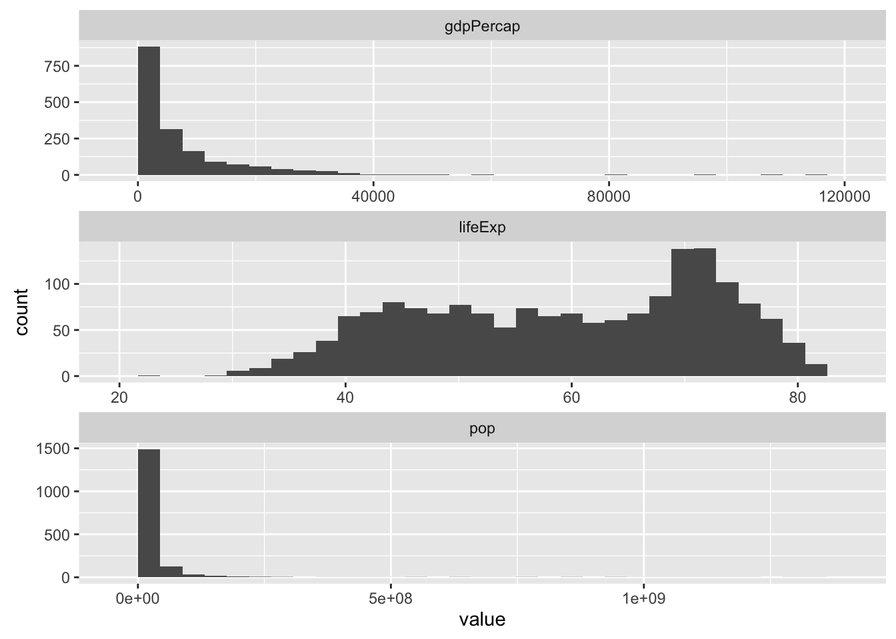

POL S/CS&SS 501, University of Washington, Winter 2016
$$ \DeclareMathOperator{\mean}{mean} \DeclareMathOperator{\var}{var} \DeclareMathOperator{\E}{E} \DeclareMathOperator{\MSE}{MSE} \DeclareMathOperator{\Bias}{Bias} \DeclareMathOperator{\SE}{se} \DeclareMathOperator{\SD}{sd} \DeclareMathOperator{\argmin}{argmin} \DeclareMathOperator{\argmax}{argmax} $$Dplyr and tidyr tutorial with gapminder
Jeffrey Arnold
January 26, 2016
data_frame- Glimpse
- Select rows with
filter()orslice() - Reorder rows with
rename() - Select columns with
select() - Extract distinct (unique) rows with
distinct() - Add new columns with
mutate() - Rename columns with
rename() - Randomly sample rows with
sample_n()andsample_frac() - Summarize values with
summarize() - Group By
- Plotting
This is an introduction to the dplyr and tidyr packages for data wrangling using the gapminder data from the gapminder package. For other introductions see the vignettes for dplyr and tidyr, and the R for Data Science chapters Relational Data, Tidy Data, and Data Transformation.
Load the relevant packages and data,
library("gapminder")
library("dplyr")
library("tidyr")
library("ggplot2")data("gapminder")data_frame
The gapminder data is special type of data frame created by the dplyr package,
class(gapminder)You can tell this because it has class “tbl_df” in addition to “data.frame”. tbl_df objects are mostly compatible with data.frame objects; you can use [, [[, $, and all the functions compatible with data frames. The most noticeable way that they differ from data.frame objects is that they have prettier printing. Instead of printing the whole object, it will only print the first few lines and columns,
gapminderCompare with how this prints if it is converted to a data.frame,
as.data.frame(gapminder)tbl_df objects can be created from an existing data frame using the tbl_df function, or from scratch with the data_frame function.
You can read more about data frames in the dplyr package here.
Glimpse
The common method to view an object in R is the str function
str(gapminder)The glimpse function in dplyr is similar, but specialized to data frames,
glimpse(gapminder)Select rows with filter() or slice()
The functions filter and slice select a subset of rows in a data frame.
Select all rows in 2007,
filter(gapminder, year == 2007)Select all rows from the US
filter(gapminder, country == "United States")Select all observations in 2002 or 2007,
filter(gapminder, year %in% c(2002, 2007))Multiple arguments, are equivalent to “and”. Select all rows with lifeExp less than 50 and population more than 50 million, and in Asia,
filter(gapminder, lifeExp < 50, pop > 50e+6, continent == "Asia")The previous code is equivalent to,
filter(gapminder, lifeExp < 50 & pop > 50e+6 & continent == "Asia")Select all rows with an average life expectancy less than 50 or GDP per capita less than 365, in Asia, for years after 1970,
filter(gapminder, lifeExp < 50 | gdpPercap < 456, continent == "Asia", year > 1970)Select the first five rows,
slice(gapminder, 1:5)Select the the last row, using the special function n() within slice,
slice(gapminder, n())Select the rows 6 to 10,
slice(gapminder, 6:10)Reorder rows with rename()
Arrange sorts rows by a variable. Sort by life expectancy from lowest to highest,
arrange(gapminder, lifeExp)Sort by life expectancy from highest to lowest (descending values),
arrange(gapminder, desc(lifeExp))You can sort by multiple columns. Sort by year (ascending), and life expectancy (descending),
arrange(gapminder, year, desc(lifeExp))Select columns with select()
The select function selects columns.
Select columns by name
select(gapminder, country, year, lifeExp)Select all columns between country and pop,
select(gapminder, country:pop)Select all columns except continent,
select(gapminder, -continent)Reorder columns so that year is first, country is second, with the remaining columns in the same order,
select(gapminder, year, country, everything())Extract distinct (unique) rows with distinct()
The function distinct returns the unique row values in a table.
This selects all unique continent, year values
distinct(select(gapminder, continent, year))This selects all distinct countries,
distinct(select(gapminder, country))Add new columns with mutate()
Add the columns GDP, log GDP per capita, log population, and log GDP, and a dummy variable for North America,
mutate(gapminder,
GDP = pop * gdpPercap,
log_pop = log(pop),
log_gdpPercap = log(gdpPercap),
log_gdp = log_pop + log_gdpPercap,
na_eu = continent %in% c("United States", "Mexico", "Canada"))It is tedious to mutate multiple columns. To apply one or more functions to one or more columns, use mutate_each,
mutate_each(gapminder, funs(log), pop, gdpPercap, lifeExp)Note that you need to enclose the list of functions in the funs function. If you apply one function, the columns keep their same name. If you apply multiple functions, the columns have the name of the variable combined with the name of the function.
mutate_each(gapminder, funs(log, sqrt), pop, gdpPercap, lifeExp)Rename columns with rename()
Rename columns with the rename() variable. Rename pop to population, gdpPercap to gdp_per_cap, and lifeExp to life_expectancy,
rename(gapminder,
population = pop,
gdp_per_cap = gdpPercap,
life_expectancy = lifeExp)Randomly sample rows with sample_n() and sample_frac()
Use sample_n and sample_frac to sample rows. Sample 10 rows,
sample_n(gapminder, 10)Sample 5 percent of rows,
sample_frac(gapminder, 0.05)Sample all rows with replacement (bootstrap),
sample_frac(gapminder, replace = TRUE)Summarize values with summarize()
The function summarize collapses a data frame to a single row, summarized by functions.
Create a data frame with the minimum and maximum years, the minimum, maximum, and median life expectancy, the average population, and the average GDP per capita, total number of observations, number of unique years, and number of unique countries,
summarize(gapminder,
year_min = min(year),
year_max = max(year),
life_exp_min = min(lifeExp),
life_exp_max = max(lifeExp),
life_exp_median = median(lifeExp),
pop = median(pop),
gdpPercap = mean(gdpPercap),
nobs = length(country),
n_years = length(unique(year)),
n_country = length(unique(continent)))It is inconvenient if you need to summarize multiple columns with multiple functions. The function summarize_each simplifies that by applying one or more functions to one or more columns,
summarize_each(gapminder, funs(min, max, mean),
year, lifeExp, gdpPercap, pop)Note that the functions need to be enclosed within the function funs.
Group By
Use the group_by function to group the data frame. This allows for calculating variables and
For each country, calculate its average, median, and maximum GDP per capita, and median life expectancy,
gapminder %>%
group_by(country) %>%
summarise(gdpPercap_mean = mean(gdpPercap),
gdpPercap_median = median(gdpPercap),
gdpPercap_max = max(gdpPercap),
lifeExp_median = median(lifeExp))For each continent, for each year, calculate the number of countries, and median life expectancy,
gapminder %>%
group_by(continent, year) %>%
summarise(lifeExp = median(lifeExp),
gdpPercap = median(gdpPercap),
pop = sum(as.numeric(pop)))For each year, find the three countries with the lowest GDP per capita,
gapminder %>%
group_by(year) %>%
arrange(gdpPercap) %>%
slice(1:3)Note that arrange() sorts within the group, not the whole data frame.
For each country, calculate the z-score of its life expectancy,
gapminder %>%
group_by(country) %>%
mutate(life_exp_z = (lifeExp - mean(lifeExp)) / sd(lifeExp))Note that when a data frame is grouped, summary functions like mean and sd are calculated within the groups, not over the whole data frame.
For each year, find all observations with greater than the median life expectancy,
gapminder %>%
group_by(year) %>%
filter(lifeExp > median(lifeExp)) %>%
arrange(desc(lifeExp))Calculate the difference in log GDP per capita for each country, and the percent growth in GDP (these should be approximately the same for small values),
gapminder %>%
arrange(country, year) %>%
group_by(country) %>%
select(country, year, gdpPercap) %>%
mutate(diff_log_gdpPercap = log(gdpPercap) - lag(log(gdpPercap)),
gr_gdpPercap = (gdpPercap - lag(gdpPercap)) / lag(gdpPercap))ungroup()
As long as a data frame is grouped by a column, you cannot delete or alter that column. For example, this will give an error message,
gapminder %>%
group_by(country) %>%
mutate(country = stringr::str_to_upper(country))## Error in eval(expr, envir, enclos): cannot modify grouping variableThis tries to delete the column country. The function select does not give an error message, but instead silently does nothing.
gapminder %>%
group_by(country) %>%
select(-country)You can remove any existing groupings of a data frame with ungroup().
gapminder %>%
group_by(country) %>%
ungroup() %>%
mutate(country = stringr::str_to_upper(country))
gapminder %>%
group_by(country) %>%
ungroup() %>%
select(-country)tally and count
To count the number of observations by group, use tally().
gapminder %>%
group_by(continent) %>%
tally()The function count is similar, but also does the group_by so you don’t have to,
gapminder %>%
count(continent)Plotting
It can be useful to gather the data so that there is only one column with values in order to plot multiple variables or to summarize.
gapminder_by_variable <-
gapminder %>%
gather(variable, value, -country, -year, -continent)
gapminder_by_variableNow we can plot histograms of all the variables in a single plot,
ggplot(gapminder_by_variable,
aes(x = value)) +
geom_histogram() +
facet_wrap(~variable, ncol = 1, scales = "free")
With a column of variables, we can group by that variable, and easily calculate averages,
gapminder_by_variable %>%
group_by(variable, country) %>%
summarise(mean = mean(value),
median = median(value),
max = max(value))Or calculate averages by country, and then transform back to the original form of the variable,
gapminder_by_variable %>%
group_by(variable, country) %>%
summarise(value = mean(value)) %>%
spread(variable, value)Create a new data frame in which each row is a country, and columns are the means and standard deviations of gdpPercap, pop, and lifeExp per country,
gapminder_by_variable %>%
group_by(variable, country) %>%
summarise(mean = mean(value),
sd = sd(value)) %>%
gather(stat, value, -country, -variable) %>%
ungroup() %>%
unite(variable_stat, variable, stat) %>%
spread(variable_stat, value)Note that I needed to use ungroup() before unite. That is because if a data frame is grouped by a column it that column cannot be altered or deleted. In this case, the data frame was grouped by variable, and unite attempted to delete variable.

This work is licensed under a Creative Commons Attribution-NonCommercial-ShareAlike 4.0 International License. R code is licensed under a BSD 2-clause license.